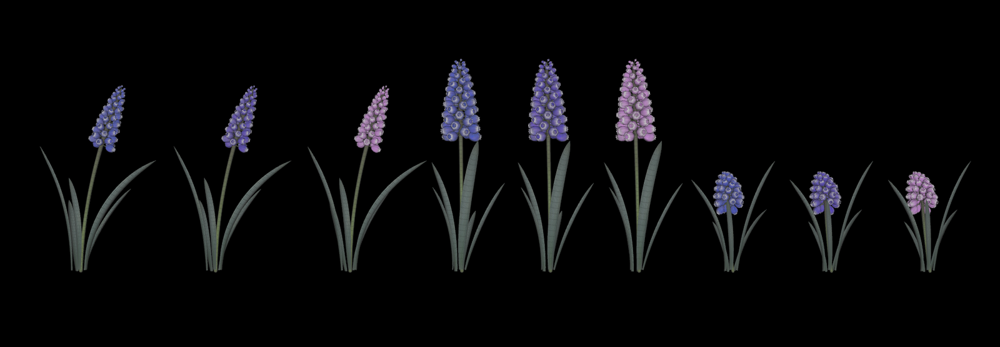

Week5
Week 5 Plan:
-
Test animated USD Variants in Houdini
-
Test import animated USD to Unreal
USD Material (Houdini to Unreal)
Animated Mesh
Then, I tried this material assign to import animated mesh to Unreal. The problem is same, for the material, it still not assigned to the mesh automatically.


Houdini Variants
USD Animation Problem in Unreal
Another problem is when I imported the animated grape hyacinth to the Unreal, the animation shows the glitchy in Unreal, and also when I tried to change the variants in the USD Stage Editor, the animation disappeared, the problem is same with last quarter I tested in Unreal. But the variant mesh and material show up correctly in USD Actor Editor.


Another attempt is to export single animated USD file thourgh two method: Componant Geometry and directly write it out. The result is use componant geometry didn't have material assign, and the animation also is glitchy. The other method showcases that materialx still can't assign automatically, but the animation is correct.


Componant Geometry
Directly Exported
When directly exported the USD file, every material has its geometry cache.

Daffodil Instance in Houdini and Unreal
Then, I tried importing the animated daffodils into Unreal. The daffodils still didn't have any materials on them. The FPS was also quite low, about 10, and there was a warning that said "Ray Tracing Geometry — Requested memory over budget 1.655 GiB / 400 MiB."


When I tried to play the animation through the Level Sequencer, I found several problems. First, it took a long time to open the Level Sequence, and then when I tried to play the animation, it dropped frames.